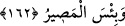

“Kim emânete hıyânet ederse, kıyâmet günü, hıyânet ettiği şeyle gelir.” Yani
hıyânet ettiği şeyin bizâtihi kendisini boynuna yüklenmiş olarak getirir. Bütün
mahlûkatın gözleri önünde rezîl ve rüsvây olur. Bu, Hz. Peygamber (s.a.)’in şu hadîs-i
şerîfine benzer:
“Bir karış miktarı arazi gasbeden kişinin boynuna kıyâmet günü Allah Teâlâ, o
yerin yedi katını tasma olarak geçirir.”[136]
Rasûlullah (s.a.) başka bir hadîsinde şöyle buyurur:
“Herhangi bir vazife ile memur olarak gönderdiğimiz bir kişi, bir şey zimmetine
geçirirse, kıyâmet günü onu boynunda taşıyacaktır.” Ayrıca yine: “Valilere verilen
hediyeler hıyânettir.”[137] buyurur. Rüşvet almak demek olduğu için, valilerin hediye
kabul etmesi de “hıyânet” sayılır.
Hz. Peygamber’in şöyle buyurduğu da rivâyet edilir: “Yarın meleyen kuzularla,
böğüren sığırlarla ve böğürdeyen develerle bana gelip de: “Yâ Muhammed, yâ
Muhammed!” diye sızlanacak olan birinizi asla tanımam. İşte o zaman ben size
cevâben: “Senin için Allah katında hiçbir şeye sahip değilim, ben size bunları tebliğ
etmiştim.” diyeceğim.[138]
Âyetten maksat; “Bizzat bu malları değil, bunların vebâl ve günahını taşıyacaklar”
demek de olabilir.
“Sonra, herkese kazandığı tastamam verilir.” Çok olsun az olsun; hayır olsun, şer
olsun, kazandığının karşılığı tam olarak verilir.
Âyetin bu kısmının, öncesi ile uygunluk bakımından “herkes” anlamına gelen ( __WORD__ )
anılmadan “sonra da kazandığı kendisine tam olarak verilir” şeklinde gelmesi de
mümkün idi. Ne var ki maksadı tam mânası ile gerçekleştiren bir delil olması için ve
daha fazla mübâlağa ifade etsin diye hükmü, her nefse şâmil kılmış oluyor. Çünkü
herkes, amelinin karşılığını görecek olduğuna göre, hıyânet edenler, bu büyük günahları
sebebiyle haydi haydi cezâlandırılacaklardır.
“Onlar”, sevabı azaltılmak, ya da cezâsı fazla verilmek sûretiyle “asla haksızlığa
uğratılmazlar…”
162. Allah’ın hoşnutluğunu gözetenle Allah’ın hışmına uğrayan bir olur mu hiç?
Berikisinin yeri cehennemdir. Cehennem ise ne kötü bir varış noktasıdır.
Buradaki “hemze” işin böyle olmadığını belirten “hemze-i inkâriye”dir. “Fâ” ise
mahzûf bir şeye mâtuftur ki takdîri şu şekildedir:
“Takvâ sahibi olup da Allah’ın rızâsına uyan kimse;” Allah’ın rızâsına uymak demek